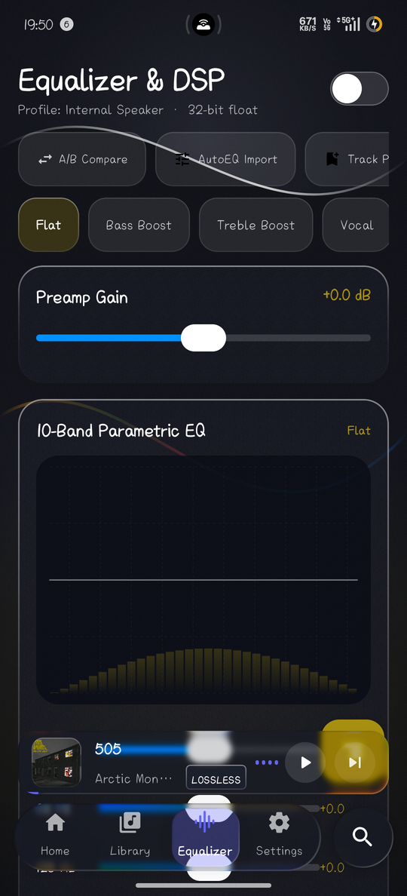

Purity in Sound. Fluidity in Glass.
An audiophile music player built from the ground up for bit-perfect local listening. Engineered with custom AGSL liquid glass shaders, 32-bit float audio engine, and native 120 Hz display refresh support.

120 Hz Fluid Refresh Rate
Node Player dynamically locks onto your screen's peak refresh rate. Experience ultra-smooth scrolling, spring-physics dock transitions, and responsive fluid tactile controls without frame stutter.
Heads-up: Real-time glass effects at 120 Hz are GPU-heavy. Mid-range phones can reduce shader complexity anytime under Settings > Performance Mode.
Bit-Perfect 32-Bit Processing
Equipped with 10-band IIR biquad filters, EBU R128 loudness normalization, true peak headroom limiting, and WASAPI exclusive / Android direct audio sink routing for uncompromised acoustic fidelity.
Crafted with Pure Liquid Glass
Real-time refraction, fluid spring physics, and intuitive touch ergonomics. Every screen operates at exact 1080×2376 native aspect ratio.
Built for Discerning Listeners
Local-first, completely private, and free of telemetry or tracking.
Liquid Glass Shaders
Real-time AGSL lens refraction, chromatic fringe, and tactile spring responsiveness powered by Kyant's backdrop engine.
Continuous Crossfade
Dual ExoPlayer architecture with equal-power curves and intelligent gapless transition bypass for continuous albums.
Node Connect P2P
Zero-configuration cross-device audio casting and state handoff over TLS between Android and Windows.
Offline-First Caching
Autonomous 512MB LRU audio caching ensuring online discovery playback stays instantly available offline.
Synchronized Lyrics
Built-in LRC parser displaying smooth scrolling timestamped lyrics with instant jump-to-time scrubbing.
Multiplatform Architecture
Unified Kotlin Compose Multiplatform codebase sharing domain models, DSP pipeline, and responsive layouts.
Download Node Player v1.8.0
Choose your platform below. Verify checksums with SHA256SUMS.txt.
Android Release
Android 8.0+ (API 26+) • Phone, Tablet & Automotive. Supports 120 Hz high refresh rate and AGSL glass effects.
Download Android APKWindows Desktop
Windows 10 / 11 64-bit • Standalone portable zip with WASAPI bit-perfect output and SMTC media integration.
Download Windows Zip